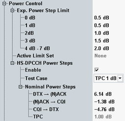

- Measurement at maximum UE power with TPC command = 1 (TPC 1dB)
- Measurement below maximum UE power with TPC command = 0 (TPC 0dB)
For these test cases, the UE must transmit specific patterns of ACK/NACK and CQI via the HS-DPCCH, as defined in the specification. To perform a conformance test, ensure that the UE transmits the required pattern. Trigger the measurement using an external HS-DPCCH trigger one half-slot before the pattern starts with the DTX > ACK/NACK boundary.
- For power steps caused by TPC commands and
- For power steps at the boundaries between ACK/NACK, CQI and DTX transmission.
The limit ranges are calculated as follows:
First a nominal power step size is defined. This nominal power step size is rounded to the closest integer dB value. The integer value determines the tolerance (see table in specification and configuration dialog below). Finally the allowed limit range is calculated as the range between nominal power step size and integer value extended by the tolerance.
Example: nominal power step size at boundary DTX > ACK/NACK = 6.14 dB, integer value = 6 dB, tolerance = 2 dB, resulting range = (6-2 to 6.14+2 )dB = 4 dB to 8.14 dB.
- Nominal power step sizes for the boundaries DTX > ACK/NACK, ACK/NACK > CQI and CQI > DTX. The TPC nominal power step size is determined by the test case. The other required nominal power step sizes are calculated from these values (e.g. limit DTX > CQI = - limit CQI > DTX). All settings are located in the "HS-DPCCH Power Steps" section, see figure below.
- Tolerance values for several power step integer values. These settings are located in the "Exp. Power Step Limit" section, see figure below.
The HS-DPCCH power step limits are only active ("Active Limit Set" = HS-DPCCH) when a half-slot measurement period is selected (option R&S CMW-KM401 required). See also parameter "Measurement Period".

The TPC measurement provides additional power control tests and limit checks, see "Limit Settings and Conformance Requirements".